San Ignacio, de los cincuenta
San Ignacio lo construyó el Ministerio de la Vivienda en los años cincuenta como barrio obrero. Si tu piso es de esa época y no se ha reformado, empieza por revisar la instalación eléctrica y la de agua.

Sin compromisoPedir presupuestoDeusto fue municipio propio hasta que se unió a Bilbao el 1 de enero de 1925. Hoy es el distrito 1 de la villa, con 49.193 vecinos en 2019, y mezcla barrios de épocas muy distintas.
San Ignacio lo construyó el Ministerio de la Vivienda en los años cincuenta como barrio obrero. Si tu piso es de esa época y no se ha reformado, empieza por revisar la instalación eléctrica y la de agua.
Ibarrekolanda era de huertas, caseríos y chalés hasta mediados del siglo XX; en los setenta se derribó el caserío Arbolagaña para construir viviendas nuevas. En la península de Zorrotzaurre, el plan prevé 5.680 viviendas, y en 2023 era zona de intervención de las ayudas de Surbisa.
En Bilbao, cambiar suelos, techos, alicatados, pintura e instalaciones sin mover tabiques ni tocar la estructura ni la fachada va con una comunicación previa de obras menores. Si cambias la distribución, o el piso es un bajo o un bajo cubierta, hace falta licencia.
Te lo explicamos paso a paso en Permisos para reformar un piso en Bilbao.
| Trabajo | Horquilla orientativa |
|---|---|
| Reforma integral de un piso | desde 28.000 € hasta 55.000 € |
| Baño completo | desde 4.500 € hasta 7.500 € |
| Cambio de bañera por plato de ducha | desde 1.600 € hasta 2.600 € |
| Cocina, solo obra | desde 4.000 € hasta 6.500 € |
Orientativo. El precio final depende de los metros, del estado de las instalaciones y de los materiales. Ver todos los precios.
De dónde sale esta información: Wikipedia: Deusto · Construible: ayudas de Surbisa 2023 · Ayuntamiento de Bilbao: comunicación previa de obras menores. Revisado en octubre de 2026. Las normas cambian: antes de empezar, confírmalo en el ayuntamiento.
Vamos, lo medimos y te damos el presupuesto cerrado partida por partida. Sin compromiso.
Esta web no usa cookies de publicidad ni de seguimiento. Solo recordamos que has visto este aviso. Más información sobre las cookies